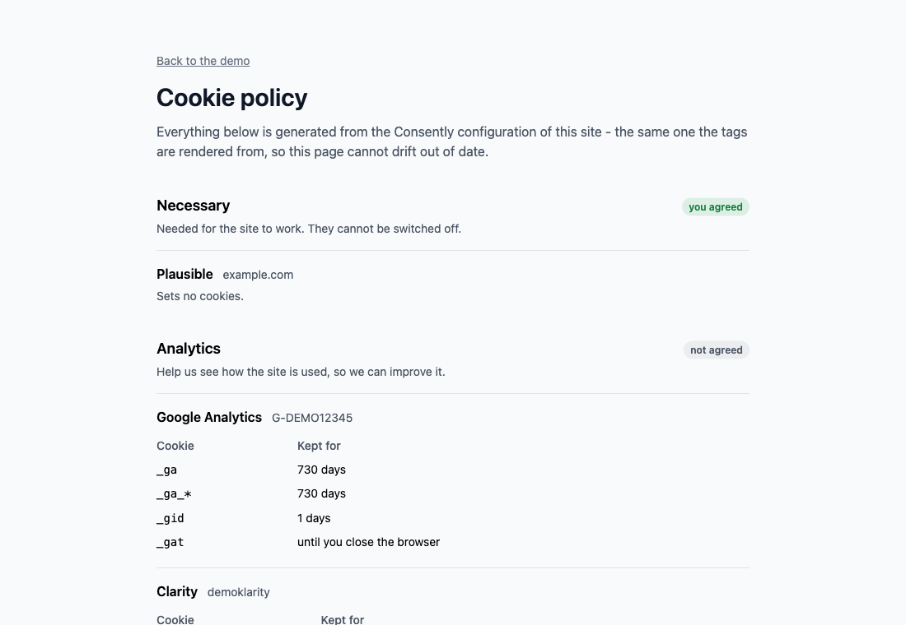
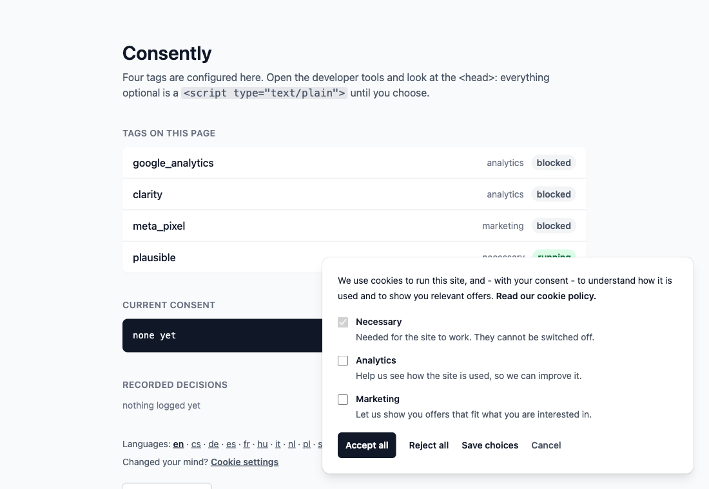

consently 1.0.0 · rails ≥ 7.1 · mit
Most banners ask for consent and load Google Analytics anyway. Consently is
the other half. Declare your tags once; every non-essential one is rendered as
an inert <script type="text/plain"> the browser will not even fetch, and
becomes a live script the instant the visitor agrees — no page reload, no lost pageview.
Try it
This page has Google Tag Manager, Google Analytics 4, Microsoft Clarity and a Meta Pixel configured. None of them has run. The banner is at the bottom of your screen — press something and watch all five panels move at once.
| Vendor | Category | State |
|---|
A blocked tag is on the page, in full, with everything it needs — it just is not a script yet.
Read from performance.getEntriesByType("resource"): the browser's own record, not ours.
Denied before any Google tag loads, updated the moment you choose.
A YouTube iframe sets cookies with no script of yours, so it waits behind a placeholder of the same size until marketing consent arrives. Its button opens the preferences panel — tick Marketing there, save, and the video appears in place.
The banner is pinned to the bottom of the window. Accept, reject, or open Settings and pick a category.
Consently is a Rails gem and GitHub Pages serves static files, so the two halves that normally live on the server — the helper that renders each tag blocked or live, and the partial that renders the banner — are reproduced here in plain JavaScript. Everything below that line is the real thing: the markup is what the gem emits, the stylesheet is the gem's own, and the release logic is a port of the two Stimulus controllers it ships. The vendor scripts are local stand-ins, so that agreeing on a demo page does not send you to Google; whether the browser fetched one is measured, not claimed.
Install
gem "consently"bundle install
rails g consently:installThe generator writes the initializer and registers the two Stimulus controllers. Nothing else to set up: the banner brings its own plain CSS, so there is no Tailwind, no build step and no config file to keep in sync.
config/initializers/consently.rb
Consently.configure do |c|
c.tag :google_tag_manager, id: "GTM-XXXXXXX"
c.tag :google_analytics, id: "G-XXXXXXXXXX"
c.tag :clarity, id: "abcd1234"
c.tag :meta_pixel, id: "123456789012345"
endapp/views/layouts/application.html.erb
<head>
<%= consently_tags %>
</head>
<body>
<%= consently_noscript_tags %>
...
<%= consently_banner %>
</body>That is the whole integration.
Tags
| Provider | Key | Default category |
|---|---|---|
| Google Tag Manager | :google_tag_manager | analytics |
| Google Analytics 4 | :google_analytics | analytics |
| Google Ads | :google_ads | marketing |
| Microsoft Clarity | :clarity | analytics |
| Meta Pixel | :meta_pixel | marketing |
| Hotjar | :hotjar | analytics |
| Plausible | :plausible | analytics |
| anything else | :custom | marketing |
Every tag takes category: to move it, and :custom covers vendors Consently does not know yet:
c.tag :custom, as: :piwik, category: :analytics, src: "https://cdn.example.com/piwik.js"
c.tag :custom, as: :inline_thing, category: :marketing, inline: "console.log('hi')"
Three categories out of the box — necessary, analytics,
marketing — and you can add your own with c.category :personalization.
necessary never waits for a click; everything else is blocked until the
visitor agrees, and the choice is kept in a consently cookie for six months.
# Change your policy and every older consent stops counting.
c.consent_version = 2
# Ask again on a schedule as well - the guidance across the EU converges on about a year.
c.consent_max_age = 12.months
# One consent for www and shop alike.
c.cookie_domain = ".example.com"c.google_consent_mode = :basic # default
c.google_consent_mode = :advancedBasic keeps Google's tags off the page until consent: nothing about the visitor reaches Google before they agree.
Advanced loads them right away with everything denied, so they send cookieless pings and Google Ads can model the conversions of visitors who said no. More data for you, a request to Google either way. Which one is defensible is a legal call, not a technical one — the gem simply does what you set.
Either way the defaults are emitted before any Google tag and updated the moment the visitor chooses. The dataLayer panel above shows both, live.
Embeds
Blocking scripts is half the job: a YouTube iframe sets cookies on its own.
<%= consently_embed :youtube, "dQw4w9WgXcQ" %>
<%= consently_embed :vimeo, "76979871", category: :analytics %>
<%= consently_embed :google_maps, "Bahnhofstrasse 12, Berlin" %>
<%= consently_embed :custom, "https://example.com/widget", title: "Widget", ratio: "4 / 3" %>Until the category is granted the visitor gets a placeholder the same size as the embed, so nothing jumps, and its button opens the preferences panel — the same one the banner opens, so the choice is made in one place and applies everywhere. What the page holds until then is only the address:
<div class="consently-embed"
data-controller="consently-embed"
data-consently-embed-category-value="marketing"
data-consently-embed-src-value="https://www.youtube-nocookie.com/embed/dQw4w9WgXcQ">
No iframe, no request to YouTube, no cookie — and youtube-nocookie.com is
what gets embedded once there is consent. ratio: sets the box
(16 / 9 by default), category: decides which consent releases it,
and any other option is passed straight to the iframe.
Ecommerce
GA4 wants a particular shape, and your models are not it. Hand the helper whatever you have:
<%= consently_ecommerce "purchase", items: @order.line_items,
value: @order.total, currency: "EUR", transaction_id: @order.number %>
Items may be hashes already in GA4 shape, or any object answering to
sku/id, name, price,
quantity, category, brand, variant —
a line item or a product usually does. The previous ecommerce object is
cleared first, as Google asks, so two events on one page cannot bleed into each other.
<%= consently_data_layer_push "newsletter_signup", source: "footer" %>Both render nothing at all when analytics consent is missing.
Multi-tenant
c.scope_resolver = -> (request) { request.host }
c.scope "shop.example.com" do |s|
s.tag :google_analytics, id: "G-SHOP00001"
end
c.scope "blog.example.com" do |s|
s.tag :google_analytics, id: "G-BLOG00001"
end
Scopes inherit the tags declared outside them and override by declaring the same
provider again. The resolver can return anything — Current.shop&.name
works just as well as a host.
Cookie policy
<h1>Cookie policy</h1>
<p>Your own legal text.</p>
<%= consently_policy %>Every category, the vendors in it, the cookies each one sets and how long they last — rendered from the configuration your tags come from, so it cannot drift out of date. Add a tag to the initializer and it appears here, in the right category, with its cookies. The panel above shows it for this page's four tags, in whichever language you picked.


Proof of consent
rails g consently:consent_log
rails db:migratemount Consently::Engine => "/consently" # config/routes.rb
c.log_consents = true # the initializer
Each decision is then stored as a Consently::ConsentRecord: the categories,
the policy version, the scope, the user agent, and a salted digest of the IP — enough
to show a decision was made, not enough to identify anyone.
The cookie is still what decides which tags run; the table is only the proof, since a visitor can clear their cookies and a log that lives in their browser proves nothing. Nobody is named unless you say who they are:
c.consent_subject = -> (request) { request.env["warden"]&.user&.id }Who gets asked
c.consent_required = -> (request) { EU_COUNTRIES.include?(request.headers["CF-IPCountry"]) }For anyone that returns false there is no banner, and every category counts as granted.
Opt-out signals are answers, so those visitors are never asked either. Global Privacy
Control — binding in California and Colorado — is honoured out of the box. Do Not Track
is advisory, so it is opt-in: c.respect_do_not_track = true.
Nothing reloads: the tags the visitor just agreed to start running in place, and the
page keeps its scroll position and its state. If your page renders something the server
decides from consent, ask for a reload instead with c.reload_after_choice = true.
Either way an event fires:
document.addEventListener("consently:change", ({ detail }) => {
console.log(detail.categories) // ["analytics"]
})
The card is a non-modal role="dialog" labelled by its own text, the settings
button carries aria-expanded and aria-controls, reopening the
panel moves focus into it, and the animation gives way to
prefers-reduced-motion. Nobody is trapped in a focus cycle they did not ask for.
The banner ships as plain CSS scoped under .consently, driven by custom
properties — the two controls at the top of the demo change nothing but these:
:root {
--consently-accent: #4f46e5;
--consently-accent-text: #ffffff;
--consently-radius: 0;
--consently-max-width: 28rem;
}
They live on :root rather than on .consently: a blocked embed
sits somewhere else on the page and its button wears the same classes, so variables
scoped to the banner would never reach it.
Want the markup instead? rails g consently:views takes the partials over, and
c.stylesheet = false stops the gem's CSS from loading. Translations live under
the consently.* keys, and your own locale files win over the gem's, so
overriding one string means writing that one key.
The banner is data-turbo-permanent, so it survives Turbo Drive navigation and
morphed refreshes. Tags blocked at first render stay blocked across visits until consent is
given, and are rendered live from the server on the next request after that.
Cheat sheet
consently_tags | in <head>: the stylesheet, consent mode defaults, and every tag (blocked or live) |
consently_noscript_tags | after <body>: GTM and Meta fallbacks, for granted categories only |
consently_banner | the banner, the panel, and the JavaScript that releases blocked tags |
consently_policy | the generated cookie policy: categories, vendors, cookies, durations |
consently_preferences_link | “Cookie settings” link; anything with data-consently-open reopens the panel |
consently_ecommerce(event, items:, **params) | a GA4 ecommerce event, items mapped from your own objects |
consently_data_layer_push(event, **payload) | any other dataLayer event, rendered only with analytics consent |
consently_embed(kind, id, category:, ratio:) | a video or map that waits for consent |
consently_consent | the current consent; granted?(:analytics) in your own views |
c.tag key, **options | id:, domain:, category:, as: (name it, for two of a kind) |
c.scope(name) { |s| ... } | tags for one tenant; c.scope_resolver decides which one a request is |
c.category :name | a category of your own beside the three built-in ones |
c.consent_version | bump it and every older consent stops counting |
c.enabled | true, false, or a callable taking the request |
c.reload_after_choice | reload once a choice is made; off by default |
c.google_consent_mode | :basic (default), :advanced, or false |
c.log_consents, c.consent_subject | store proof of each decision, optionally naming who |
c.stylesheet | link the banner's CSS; off if you style it yourself |
c.cookie_name, c.cookie_max_age, c.cookie_path, c.cookie_domain | where the choice is kept |
c.consent_max_age | ask again after this long, whatever the cookie says |
c.respect_do_not_track, c.respect_global_privacy_control | treat an opt-out signal as a rejection |
c.consent_required | who has to be asked at all; false means no banner and everything granted |